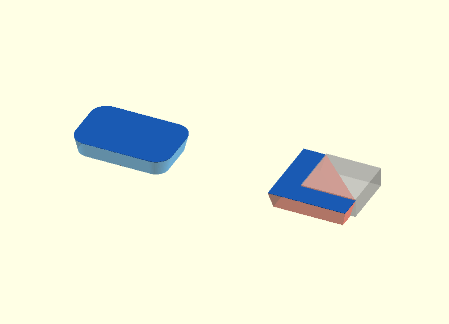

Rounded rectangular tube with end chamfers — v0.1
This standalone OpenSCAD example shows a compact way to build a hollow rounded rectangular tube with two different edge treatments:
- a small chamfer on the outside edge of both end faces;
- a separate chamfer on the inside edge of the hollow opening.
The example is deliberately independent of NopSCADlib. It is meant as a small geometry reference for understanding how hull(), offset(), linear_extrude() and difference() can work together.

The complete source is in scad/rounded_rectangular_tube.scad.
Parameters
| Parameter | Default | Meaning |
|---|---|---|
| outer_width | 30 mm | Outside size in X |
| outer_depth | 20 mm | Outside size in Y |
| length | 60 mm | Tube length in Z |
| wall_thickness | 2.5 mm | Nominal wall thickness |
| outer_radius | 5 mm | Outside corner radius |
| inner_chamfer | 0.6 mm | Chamfer on the hollow inside edge |
| outer_chamfer | 0.4 mm | Chamfer on the outside edge |
The inside width, depth and radius are derived from the outside dimensions and wall thickness.
Visual design walkthrough
The editable walkthrough is in
design/rounded_rectangular_tube_explained.scad.
Use the design_step selector to inspect the construction one operation at a time.
The renders below deliberately keep the same geometry visible while changing only the operation being explained.
Step A — Outer and inner 2D profiles

The blue profile is the rounded outside boundary. The orange profile is the smaller rounded inside boundary derived from the wall thickness.
Step B — The two important layers for the outside chamfer

At the end face the outer profile is inset by outer_chamfer. Only 0.4 mm farther into the part the full outside profile is restored. These are the two boundaries that define the lower outside chamfer.
Step C — Hull the outside profiles

Because the outside rounded rectangle is convex, hull() can connect the smaller end profile to the full profile without filling any region that is supposed to stay open.
Step D — Subtract the normal inner opening

The continuous inner profile is now subtracted. This produces the hollow tube, but its inside end edge is still sharp.
Step E — The two layers for the inside chamfer

This time the operation is reversed. At the end face the hole is enlarged by inner_chamfer. At Z = inner_chamfer the hole has returned to its normal size.
These layers are not material to keep. They define a cutting volume.
Step F — Hull the inside cutting volume

Again, both profiles are convex rounded rectangles. Their hull is therefore a simple tapered ring-shaped boundary around the opening. The resulting solid is used only as a cutter.
Step G — Subtract that cutter

Subtracting the cutter removes the sharp inside edge while leaving the rest of the wall unchanged.
Step H — Mirror the operation at the top

The same inside cutter is mirrored at the opposite end. The outside chamfers were already created symmetrically by outer_body().
Why this is much easier than the corner bracket
This comparison is the main reason for keeping the example.

On the left, the rounded rectangle is convex. A straight line between any two points in the profile remains inside the profile. A hull between two nested rounded rectangles therefore behaves exactly as wanted.
On the right, the simplified bracket cross-section is an L. That shape is concave: it deliberately contains a missing quadrant. But hull() always creates a convex result. If it is applied globally to two L-shaped layers, it bridges across that missing quadrant.
That gives the key distinction:
| Rounded tube construction | Corner bracket construction |
|---|---|
| Hull a convex outside profile | Material profile itself is a concave L |
| Hull a convex inside opening separately | A global hull would bridge the open quadrant |
| Subtract the inner hull from the outer body | Extra clipping or local subtractive geometry is required |
| No special corner junction between separate bevel systems | Elephant-foot relief must also meet the side-edge bevels at the arm tips |
So the finished tube is hollow and is not itself a convex solid. The reason the code stays simple is that the problem has been decomposed into two convex hull operations: one for the outside body and one for the inside cutting volume.
The corner bracket is harder because its important boundary is already concave before the chamfer is added. The current bracket implementation therefore needs an outer convex envelope plus intersection(), separate local opening hulls for the elephant-foot relief, and local miter correction where that relief meets the side chamfer.
This is also why the older per-edge ef_cuts() solution remains attractive: it avoids asking one global hull to understand the concave L at all.
1. Build the rounded 2D profiles
The basic rounded rectangle is made from four circles. hull() wraps those circles with the smallest convex shape that contains them, producing straight sides and rounded corners.
module rounded_rectangle(width, depth, radius) {
hull()
for (x = [radius, width - radius],
y = [radius, depth - radius])
translate([x, y])
circle(radius);
}
The outer profile uses the requested outside dimensions. The inner profile is shifted inward by the wall thickness and uses a correspondingly smaller radius.
2. Create the outside end chamfers
The outer body is not made with one simple extrusion. Instead, three profile layers are supplied to one hull():
- at the bottom face, the outer profile is inset by outer_chamfer;
- at Z = outer_chamfer, the profile has its full outside size;
- at the top face, the profile is inset again.
hull() {
translate([0, 0, 0])
linear_extrude(epsilon)
offset(delta = -outer_chamfer)
outer_2d();
translate([0, 0, outer_chamfer])
linear_extrude(length - 2 * outer_chamfer)
outer_2d();
translate([0, 0, length - epsilon])
linear_extrude(epsilon)
offset(delta = -outer_chamfer)
outer_2d();
}
The full-size middle section prevents the entire tube from shrinking. The hull only creates a short transition from the smaller end profile to the normal profile at each end.
Conceptually:
end face normal tube
smaller profile -> full profile
\____________
short chamfer
3. Subtract the continuous hollow interior
The normal inner profile is extruded slightly beyond both ends of the tube and subtracted with difference().
translate([0, 0, -1])
linear_extrude(length + 2)
inner_2d();
At this stage the tube is hollow, but the inside edge of each end face would still be sharp.
4. Create the inside chamfer as a cutting volume
The inside chamfer uses the opposite idea: instead of making the solid smaller at the end face, it makes the hole larger at the end face.
The cutting volume is a hull between:
- an enlarged inner opening at the end face;
- the normal inner opening inner_chamfer millimetres farther into the tube.
module inner_chamfer_cut() {
hull() {
translate([0, 0, -epsilon])
linear_extrude(2 * epsilon)
offset(r = inner_chamfer)
inner_2d();
translate([0, 0, inner_chamfer])
linear_extrude(epsilon)
inner_2d();
}
}
Subtracting this volume removes only the small tapered ring around the inside edge. The same cutter is mirrored at the top end.
So the two chamfers are made in different ways:
| Edge | Construction |
|---|---|
| Outside end edge | Build a smaller end profile into the solid |
| Inside end edge | Subtract a larger end profile from the hollow opening |
That distinction is the main idea demonstrated by this example.
5. Why epsilon exists
epsilon = 0.01 mm gives the very thin helper layers a real thickness and lets subtractive geometry overlap slightly.
That avoids depending on perfectly coincident faces in Boolean operations. It is a construction tolerance for the CAD model, not a print tolerance.
Complete construction
The final module is intentionally simple:
module rounded_rectangular_tube() {
difference() {
outer_body();
// Continuous hollow interior.
translate([0, 0, -1])
linear_extrude(length + 2)
inner_2d();
// Inside chamfer at both ends.
inner_chamfer_cut();
translate([0, 0, length])
mirror([0, 0, 1])
inner_chamfer_cut();
}
}
This example is useful when a part needs a rounded rectangular shell and the two end-edge treatments need to remain independently adjustable.